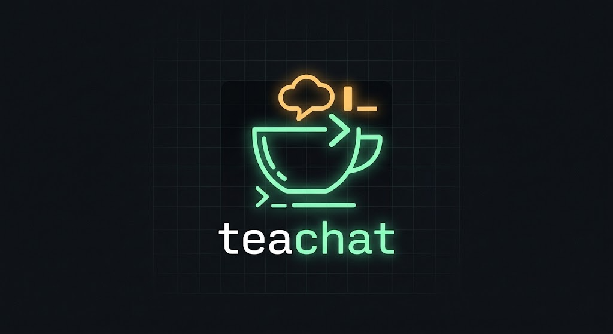

Para devs e sysadmins. Sem app pesado, sem navegador, sem ruído: você entra numa sala com uma linha de comando, conversa e sai com Ctrl+C. Roda no servidor da sua empresa, e as mensagens não saem da rede.
$ teachat

Tela cheia, como o vim ou o htop. Mensagens em cima, sua caixa de digitação embaixo.
┌─────────────────── dev · mateus ───────────────────┐ │joao: alguém viu o alerta de disco no db-02? │ │daniel: vi, tá em 91%. limpando os logs antigos │ │mateus: valeu. o deploy das 10h subiu? │ │daniel: subiu, sem erro no healthcheck │ │ │ └────────────────────────────────────────────────────┘ ╔════════════════════════════════════════════════════╗ ║boa! vou fechar o ticket█ ║ ╚════════════════════════════════════════════════════╝
teachat, caiu na local. Para outra sala, --room: se não existe, é criada.Chat de trabalho virou app pesado com notificação, thread, emoji e mil canais. O teachat é o oposto: uma ferramenta de linha de comando, pequena, que você usa como qualquer outra.
Ninguém digita ws://...?room=x. É teachat --room dev --alias daniel, e o resto é detalhe interno.
Um binário de servidor numa máquina interna. O tráfego não sai da rede da empresa. O cliente aponta para ela com --server.
make 2>&1 | teachat --room ops manda cada linha para a sala do time, mostra no seu terminal e sai no fim. Seguro em scripts e no cron.
Só entra feature que se paga. O código todo tem cerca de 380 linhas, apoiadas em bibliotecas que fazem o trabalho pesado.
Medido, não estimado. O servidor guarda tudo em memória e cada conexão custa pouco.
Daniel e Mateus estão na sala dev. João está na geral. Daniel digita oi e aperta Enter. Avance passo a passo, ou aperte reproduzir. As setas do teclado também funcionam.
Cada passo está explicado em detalhe na documentação.
O terminal está em modo raw: o kernel não guarda nem ecoa nada, cada tecla vai direto para o programa. O tcell lê os bytes do stdin e transforma em eventos. O "o" e o "i" já estão na caixa de digitação. Quando chega o Enter, o SetInputCapture pega a tecla antes da caixa.
Precisa de Go 1.27 ou mais novo.
git clone https://github.com/daniel-cmdline/teachat.git cd teachat # o servidor (porta 7347, sala padrão local) go run ./cmd/server # em outro terminal: sem flags, você cai na sala local go run ./cmd/client # mandar a saída de um comando para a sala uptime | go run ./cmd/client
Flags, teclas, outra máquina na rede e como gerar os binários: na documentação.
O teachat está no começo e cresce uma feature por vez.
Porta configurável, para cada empresa rodar a própria instância do jeito que quiser.
Senha nunca trafega aberta: wss:// com certificado fixado para rede local.
SQLite em Go puro. Quem entra vê o que já foi dito, e o modo pipe guarda logs.